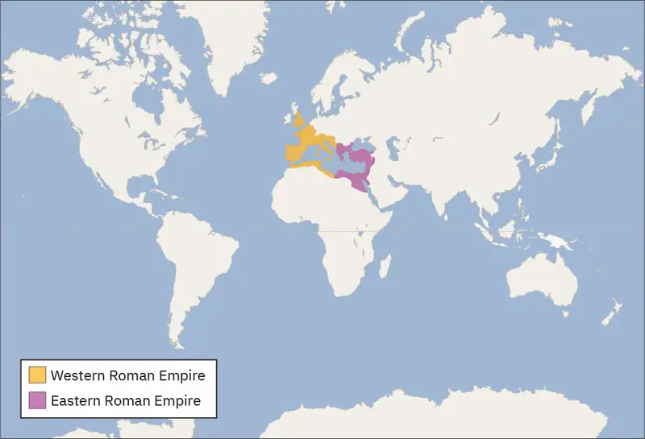
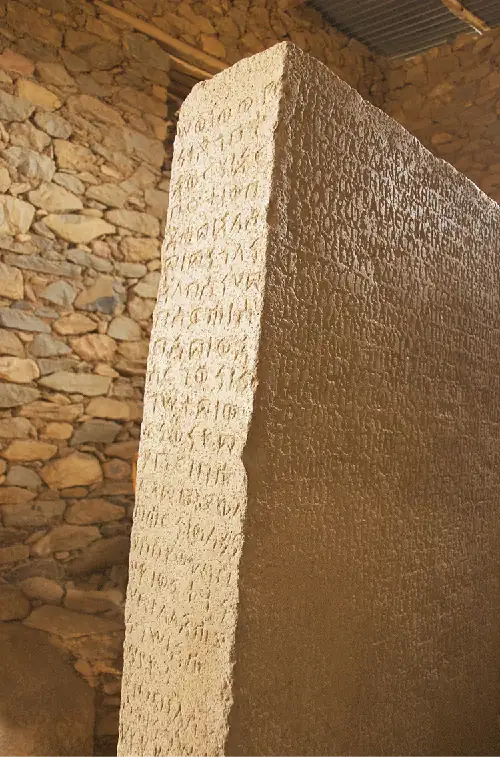
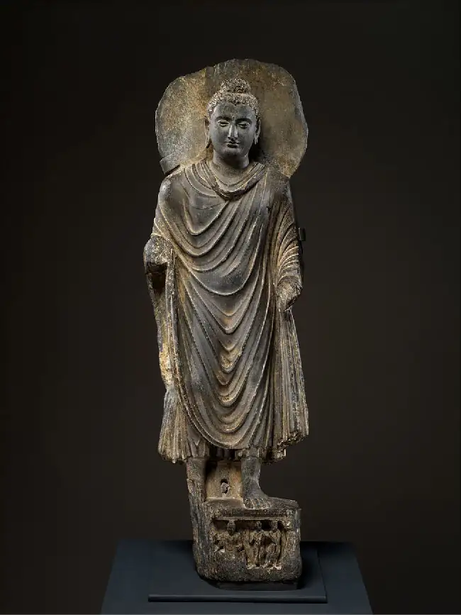

Chapter 10: Empires of Faith¶
Introduction¶
![A picture of a wall with a rectangular, beige colored stone carving scene is shown. In the middle, a man is sitting on a horse which is wearing a head dressing with flowers and straps, a decorated saddle, and a bow in its tail. The man is carved with ornate designs all over his torso and legs, has a crown on his head, a beard, flowing curly hair, and a sword on his left side with his left hand on it. His right arm extends over the head of the horse and he holds an object in his hand. Both the man and the horse are looking down at a man kneeling on the ground in front of the horse. He is wearing a flowing cape and a dress of armor. He has a beard and is holding his arms out in front of him. In between the man and the horse stands a man in armor with a beard, his head in the shadows of the carving. The top of a person is carved into the wall behind the horse. Around the rectangular carving is a bumpy stone wall.](img/osx-worldhist-a10-00-shapurval.webp)
The later Roman Empire was a time of profound cultural, political, and religious transformations. Various crises in the Roman government, as well as the rise of Christianity, propelled these changes. In the third century CE, the emperor Valerian’s capture by the Sasanians was an indication of how easily the Roman Empire’s prominence could fluctuate and fissure (Figure 10.1). Stretching from the island of Britannia (Britain) in the Roman West to Syria in the Roman East, the empire continually struggled in its relationships with foreign groups on its eastern and western frontiers. The threatening presence of the Sasanians and other marginal states in the Mediterranean, including various Germanic kingdoms in the west and Palmyra in the east, reflected a new state of affairs.
The empire shifted its focus eastward, a trend signaled most prominently by its reorientation around its new capital in Constantinople (today’s Istanbul). The Romans then saw their power and sphere of influence shift as well. With a growing Christian population and shrinking borders, the entity that now became the Byzantine Empire persisted in the eastern Mediterranean. Yet it had to grapple with the migration of different groups through its territory as well as the disintegration of the western empire into small independent states. In addition, smaller states such as Aksum in sub-Saharan Africa and the Kushan Empire in central Asia came onto the scene during this period, establishing their own thriving societies away from the Mediterranean while being interconnected as neighbors and trade partners. The interrelationships among this multitude of states reflect the complicated circumstances of the Late Antique world.
![A timeline shows events from this chapter. 100 BCE: Aksum and Himyar kingdoms founded. 200 BCE: Kushan Empire founded; a picture of a stone statue in long robes is shown. 260 CE: Sasanian victory over Romans at Edessa; a picture of a wall stone carving of a man on a horse is shown. 267 CE: Zenobia becomes Empress of Palmyrene Kingdom; a picture of two round stone coins is shown with a woman’s profile on one and a carving of a person on the other. 284 CE: Diocletian founds the Roman Tetrarchy; a picture of a stone carving with four people is shown. 313 CE: Edict of Milan issued. 330 CE: Constantinople founded; a picture of a large multi-level building with tall spires is shown. 390 CE: Abu Karib converts to Judaism. 410 CE: Visigoths plunder Rome; a picture of men climbing and attempting to pull down a statue of a man with ropes is shown. 578 CE: Ghassanids capture al-Hirah.](img/osx-worldhist-a10-00-timeline.webp)

10.1 The Eastward Shift¶
Learning Objectives
By the end of this section, you will be able to:
- Explain how and why the political focus of the Roman Empire shifted eastward during Late Antiquity
- Discuss how the adoption of Christianity as the official religion of the Roman Empire altered Mediterranean society
- Explain the collapse of Roman authority in the West, including the role of Germanic migrations and invasions
From the third through the seventh centuries CE, the culture of the Roman Empire transformed itself profoundly and in fundamental ways. The rise of Christianity marked a seminal moment, and from the time of the emperor Constantine in the fourth century, the government advocated monotheism, the worship of one God to the exclusion of others. With a Christian government and a new capital at Constantinople in the eastern Mediterranean, the Byzantine Empire grew from the old Roman state. At the same time, the fracturing of the Roman Empire’s government led to various new regional alliances and rivalries. Germanic kingdoms flourished in the West, while the Byzantines attempted to maintain order among the burgeoning Christian population within their borders.
The Roman Empire’s eastward shift epitomized the major cultural changes occurring during this period. Because of these shifts, Late Antiquity has been characterized as a transitional period between the ancient and medieval worlds that occurred from roughly 150 to 750 CE. On the one hand, Late Antique culture remained influenced by the classical past, with the maintenance of certain ancient institutional values. While still calling themselves “Romans,” the Byzantines simultaneously attempted to maintain Christian orthodoxy. On the other hand, the appearance of new religious identities and the breakdown of the Roman state led to conflicts among different regional and cultural groups. The empire’s borders were in constant flux, and its territory slowly diminished as numerous powers vied for regional dominance.
Constantinople and the Roman East¶
The third century was a period of upheaval and change for the Roman government, often referred to as the Crisis of the Third Century. From 235 to 284, a span of only forty-nine years, the empire was ruled by upward of twenty-six different claimants to the imperial throne. New emperors were often declared and supported by Roman soldiers. As a result, civil wars—as well as wars on the eastern frontier—were nearly constant. Economic problems became more apparent after the devaluation of currency, in which coins issued by the government became increasingly less valuable, led to a rapid rise in the price of goods. The high turnover of leadership led to periods of reform and attempts to bring stability to the government and economy, but progress toward securing the empire was limited.
In 284, however, Diocletian, a military official from Illyria in the Balkans, was declared emperor by his troops. His reforms, unlike those of his predecessors, had a lasting impact on the empire and its eventual eastward shift. Diocletian divided his rule with a co-emperor, who like him bore the title augustus, and with two junior emperors given the title caesar. This shared rule between the four emperors was called a tetrarchy. While there was no formal geographic division of leadership, each emperor or tetrarch had his own sphere of influence. Each also had a regional capital city located near the empire’s borders from which he governed and organized military defense. There were familial and legal ties among the tetrarchs, who utilized imagery to send a message of strength (Figure 10.4). Diocletian also aimed to fix the empire’s economy, issuing several edicts to curb inflation and promote trade within the empire. For example, in 301, he issued the Edict on Maximum Prices, which had two goals. First, to curb inflation, the edict placed an upper limit on the price at which certain goods could be sold. Second, to combat currency devaluation, it set specific values for coinage issued by the government.
![A picture of a stone carving of four men standing together on a short pedestal is shown on a corner where two marble walls meet. The carving is a maroon color and two of the men face left, while two men are behind them facing right. There is a crack running between the two pairs. All four men are shown in dress armor and capes, flat, round hats on their heads, almond shaped eyes, very flat noses, and holding a sword at their sides with their left hands. Both sets of men show the man on the left draping his right arm on the left shoulder of the other man. The left foot of the man furthest in the background as well as his half of the pedestal is all white. The marble wall behind them is various colors of green, yellow, white, and brown.](img/osx-worldhist-a10-01-tetrarchy.webp)
It is unclear if when Diocletian established his tetrarchy, he expected to eventually abdicate as a means of making the succession of future emperors more uniform. In any case, after he and his co-emperor Maximian formally left office in 305, the remaining two tetrarchs took their place alongside two new junior emperors. Civil wars soon engulfed the empire as infighting among the emperors resulted in the advancement of Constantine, son of the emperor Constantius Chlorus. Upon his father’s death, Constantine claimed the imperial throne in 306. Making his way from the city of York in Britannia, he first gained control of the western provinces before arriving in Italy in 312. In the city of Rome, he defeated Maxentius, his final rival to the throne, at the Battle of Milvian Bridge.
During his reign, Constantine attributed his victory over Maxentius to the Christian God. According to the emperor’s official biographer Eusebius, Constantine had seen an image of the labarum, the Greek symbols of “Chi” and “Rho” that make up the first letters of “Christ,” in the sky that commanded him, “By this sign, conquer.” Whether this was a message specifically designed to appeal to the empire’s Christian populace is disputed, but Constantine showed clear Christian sympathies. From early in his reign, however, he sent out a carefully balanced message aimed to please Christians and traditional polytheists alike. For example, the design and inscription of the Arch of Constantine in Rome express a new synthesis of Roman tradition with Christianity that balanced the emperor’s competing interests. The arch contains images from existing Roman monuments, while the inscription regarding a divine being is deliberately ambiguous (Figure 10.5).
![A picture of the face and one side of a large, rectangular marble arch is shown. There are three bays – a large one in the middle and two smaller ones on each of the sides. Above the middle bay there are words carved into the arch. The right and left sides at the top show carvings of figures in various scenes. The one side shown at the left in the picture has carvings at the top as well. Above the two smaller bays there are two circles with figures at various events carved. The one side shown also has a circular carving and a plain wall below the circular carving. Four carved and decorated columns are positioned on the face of the arch – one on each end and one in between each bay. They run from a bottom pedestal to the top where a carving of a person sits at the top. Inside the bays there are carvings of scenes with people as well as sayings. In front of the arch is a gray spiked fence and eight people walk toward the right. They appear to be older and wear pants and coats. Two people stand to the left holding a camera. In the background there are hills, trees, a pale blue sky and other people walking.](img/osx-worldhist-a10-01-archconst.webp)
To further celebrate his rule, Constantine refounded the city of Byzantium (modern-day Istanbul) as Constantinople in 330 CE, and it eventually became the new imperial capital. The city’s location on the empire’s eastern frontier was advantageous for its proximity to trade routes and to the sites of many Roman military campaigns (Figure 10.6).
![A map is shown with an inset on the right. The map on the left has Europe labeled at the top and Africa and Asia labeled along the bottom with the Mediterranean Sea in the middle. A sliver of north Africa along the Mediterranean Sea is highlighted pink along with Portugal, Spain, France, Belgium, small western and southern parts of Germany, Switzerland, Italy, Montenegro, Bosnia, Croatia, Slovenia, Austria, a small southern slice of the Czech Republic, a western area in Slovakia, the western portion of Hungary, a small northern portion of Serbia, and the western portion of Montenegro. This is labeled “Western Roman Empire.” A northeastern sliver of Africa along the Mediterranean is highlighted green along with a small northern portion of Jordan, Israel, Lebanon, most of Syria, the western three fourths of Turkey, Bulgaria, Greece, Kosovo, most of Serbia, small slices of southeastern and southwestern Romania, Albania, a small southeastern portion of Bosnia and Macedonia. This is labeled “Eastern Roman Empire. The city of Constantinople is labeled. The city is then shown in an inset to the right. This inset is gray in color and shows the city along the Black Sea with various black squares along the waterways. The inset is labeled “Constantinople.”](img/osx-worldhist-a10-01-m-eastemp.webp)
Beyond the Book: Constantinople: The “New Rome”?
Though not initially intended to replace Rome, Constantinople (“city of Constantine”) was formally dedicated as a city in 330 CE, and the emperor Constantine was celebrated with various monuments. On the day of the dedication, Constantine erected a porphyry column with a statue of himself as Apollo on top. He collected other pieces of art from across the empire to decorate the newly christened city, including the Serpent Column from Delphi, an Augustan victory monument from Nicopolis, and an Egyptian obelisk. These represented Constantine’s attempt to mark the city as both the continuation and culmination of Roman history to that point, giving legitimacy to Constantinople and to his reign.
The Colossus of Constantine was a massive statue that once occupied the west apse of the Basilica of Maxentius in Rome. Constantine may have wanted it to portray him as having an otherworldly or divine quality, apparent in its sheer size—the head alone is more than eight feet high—but also in its enlarged eyes that look toward heaven. The rigid facial features show the changing style of portraiture at the time (Figure 10.7a).
![Image a shows a picture of broken pieces of a statue are shown in a row. At the left a piece of a bicep and elbow lean against a pale orange wall with veins shown running in the arm. Next to that is a stone pedestal with a stone neck and face. The chin has a cleft in it and the nose is large. The statue’s eyes are round and look up and there is a crown around the head. A small square is cut out on the statue’s left temple. Next to the head a piece of a knee lies on the ground with a tablet hanging on the wall above it. The rectangle tablet has carvings at the top, a blank space underneath, and faded words carved in the bottom half. To the right on a short pedestal is a statue of a right hand with the pointer finger and thumb pointed up, while the other three fingers point down. The nails are short and there are some cracks in the hand. The wall behind the statue pieces is orange and faded and has water stains all over. The left portion shows an adjoining wall that appears to be stone with some carving at the top. Image b shows a picture of a tall, round, stone column is shown. The column is made up of cylindrical portions with lines running vertically until the last portion on top, where the lines turn horizonal. A small square stone sits at the top. The pedestal is made up of rectangular bricks. Rubble is seen at the bottom and to the left are some wooden looking square objects. A building is in the background on the right with a half circle dome on top, topped with a small round structure with another circular dome. The background shows yellow sky and some trees.](img/osx-worldhist-a10-01-colossus2.webp)
The Column of Constantine originally served as the base for a large statue of the emperor in Constantinople. Erected after he became sole emperor in 324, the statue, now lost, may have shown him dressed as his favored god Sol Invictus (the “Unconquered Sun”). Constantine seemed to hold that his devotion to this god was compatible with his preference for Christianity (Figure 10.7b).
The Serpent Column was dedicated to Apollo in the fifth century BCE by the Greeks in Delphi, then considered the center of the world. Its removal to Constantinople may have been intended to reclaim that status for the emperor’s city and to show again his affinity for the sun god (often equated with Apollo). The column’s original purpose as a monument to the Greeks’ victory over the Persians allowed Constantine to hint at his own victories in the recent civil wars (Figure 10.8).
![A drawing and a picture of a column is shown. (a) The first is a drawing of a greenish column made of three intertwined snakes, their jaws open, tongues sticking out, and each facing a different direction. There is a small heart shaped piece missing at the bottom. The floor is brown and the background is pale green. The words “Columna anea friceps m Hippodromo” appear to the left of the column in cursive. (b) A picture of a broken column is shown. The intertwined pieces are dark gray and start out thinner at the bottom and get thicker toward the broken top. The column is shown on a flat, white pedestal, in an oval recess in the ground surrounded by black swirly gates. A shadow of the column is shown at the bottom left of the picture. In the background there is a tall beige spire as well as trees, buildings, and lampposts along the road going from the column to the spire.](img/osx-worldhist-a10-01-serpent.webp)
- What message did each monument send about Constantine’s reign?
- How was Christianity incorporated into Constantine’s monuments in Constantinople?
Constantine ruled until his death in 337, and his legacy was cemented during the reigns of his sons who succeeded him. They waged military campaigns to maintain the frontiers of the empire, promoted Christianity, and enacted laws against pagan practice. Only Julian, a nephew of Constantine, attempted a brief resurgence of paganism in the Roman government during his rule, from 361 to 363. He enacted a series of reforms, wrote a number of philosophical works, and carried out a military campaign against the Sasanians. But after reaching the Persian capital of Ctesiphon, Julian’s army was effectively in retreat when the emperor suffered a mortal wound from a spear. Any vision for a renewed polytheist empire ended with his death. Thus, Constantine had effectively ushered in a new era of Christian governance. Rulers for the rest of the empire’s history were explicitly Christian, acting as de facto heads of the church and controlling church policy.
The Rule of Roman Christianity¶
The Christian Church attracted a large influx of new members during the reign of Constantine. The Edict of Milan, issued in 313, allowed citizens to worship any deity they wished, but it was mainly intended to embrace Christians living in the empire who were now given back their confiscated property and legal rights. Christianity was not made the official religion, but the edict effectively ended any state-sanctioned persecution of its adherents within the empire’s borders. The religion’s new privileged status brought about profound changes for its institutions and their relationship to the imperial government.
Emperors generally did not interfere in the self-regulation of the church, except for religious belief. They exercised this control chiefly by organizing ecumenical councils, meetings of bishops to discuss religious doctrine. (The word “ecumenical” comes from the Greek oikoumene, meaning the entire inhabited world.) Ecumenical councils brought together bishops from the Roman East and West and issued decisions designed to be adopted universally. They were venues for hammering out matters of Christian orthodoxy, addressing questions of Jesus’s divinity, and eliminating emerging heretical movements within the church.
In 325, for example, Constantine convened the first ecumenical council, the Council of Nicaea, to settle the question of Jesus’s divine nature and his relationship to God. The bishops were most concerned with addressing the Arians, followers of the priest Arius, who held that Jesus was created out of nothing but had a beginning. The bishops at the council worried that this thinking detracted from Jesus’s divinity and after much debate decided against the Arians. They adopted the Nicene Creed, a statement of dogma that declared Jesus was “begotten, not made” and was “consubstantial” with God, expressly embracing his divinity. These types of religious debates remained at the center of the numerous ecumenical councils thereafter, and emperors sometimes used them to exercise control over church-related matters. But while the emperors self-styled themselves as priestly rulers, the bishops sometimes contested this role, and emperors then had to compete with them for religious authority.
The steady bureaucratization of the empire made its governance more complicated because it meant that power could only be usurped at various levels of government. One way in which emperors attempted to balance local, regional, and imperial power was by formally codifying laws. For example, in 429, the emperor Theodosius II established a commission to compile what became known as the Theodosian Code, a single publication containing all laws issued after 312 CE from across the empire. This code was the first attempt to create a unified system of government for the empire since the days of the Republic. It further solidified Christianity in Roman society because it featured laws that adhered to Christian beliefs and practice. It also brought about a transformation of social morals and placed power in the hands of the church to police morality, a practice that had not been seen in antiquity.
The Theodosian Code represented a trend of emperors attempting to address religious issues through laws and edicts. Constantine, for instance, seems to have banned animal sacrifice, a major feature of traditional Roman religion, though it was already in decline by this time. In several imperial edicts, notably the Edict of Thessalonica in 380 that made Nicene Christianity the state religion of the Roman Empire, Theodosius I attempted to suppress religious controversy outside the church, treating pagans and heretics (those holding unorthodox beliefs) as threats to the imperial state. The First Council of Constantinople, convened in 381, reestablished the Nicene Creed and addressed the topic of the Holy Spirit, suggesting that the problem of Arius’s sympathizers had not completely disappeared. Jewish people were also viewed skeptically during this time but were not a major concern to imperial authorities. Finally, responding to an appeal from the Christian population of Athens, the emperor Justinian closed that city’s philosophical schools in 529. The dismantling of pagan temples, removal of statues of pagan divinities, and discontinuation of traditional practice and priesthoods throughout the empire were a common pattern of authority during this time (Figure 10.9).
![A picture of a bronze-colored statue of a winged female is shown on a round, tiered pedestal. Her large feathered wings extend above her head and she wears a long sleeveless dress with ruffles swirling below the waist. Her arms extend above her head and she has short hair. Necklaces hang from her neck and one of her bare feet stands on a golden sphere. Her other bare foot extends out toward the back. Shadows form on both sides of the pedestal from her figure on the yellow ombre walls behind the statue.](img/osx-worldhist-a10-01-altarvict.webp)
The relationships between pagans and Christians were unquestionably strained. Elite pagans could still pursue a career and hold public office, as did the noted intellectuals Libanius and Symmachus. These public figures viewed their Christian counterparts, such as the theologian Gregory of Nazianzus, as holding the same general philosophical assumptions as themselves, so they could debate religion together. Yet episodes of violence also occurred in the cities of the empire where bishops wielded both religious and political power. The murder of the influential pagan scholar and teacher Hypatia in Alexandria in 415 demonstrates how a bishop could wield extralegal authority. Bishop Cyril viewed Hypatia, who had a large friendship network of Christians and pagans, as a political threat, and he was able to convince the Christian populace to attack and kill her. This secured his own position as a substantial political and religious authority in the city.
Link to Learning
Learn more about the pagan teacher and scholar Hypatia of Alexandria in this video. Hypatia’s teaching of mathematics and philosophy was viewed as a threat to the Christian order in the city, which ultimately led to her demise.
The Fall of the Roman West¶
Theodosius I was the last emperor who reigned over a united empire. After his death in 395, power passed to his two sons; Arcadius ruled the eastern half of the empire from Constantinople, while Honorius controlled the western half from Ravenna in northern Italy. The geography of each region dictated its fate. With a shorter stretch of the Danube River to guard against foreign invaders, the East was able to thrive by paying off these groups with its wealth and discouraging them from entering their territory. The West suffered various setbacks along its more extensive and chaotic frontier that brought both political and social disruption. There were simply more foreign groups to contend with, and the traditional barrier of the Rhine and Danube Rivers was long and continuously crossed by Germanic groups during this period. The West was also less urbanized than the East, resulting in less social cohesion in parts of this region. This allowed different, outsider cultures to infiltrate and transform it (Figure 10.10).
![A historical map of Europe is shown with longitude and latitude lines running throughout. It is labeled “The Germanic Kingdoms and the East Roman Empire in 526.” A scale is shown under a paragraph written about the map under the title. The map shows Europe, the northern area of Africa, the North Sea, the Atlantic Ocean, the Mediterranean Sea, and the Black Sea. Ireland is outlined with light brown and labeled “Scots.” The northern half of the United Kingdom is outlined in light blue and labeled “Picts.” The southern western half of the United Kingdom is outlined in bright yellow and labeled “Britons” while the eastern half is highlighted pink and labeled “Angles and Saxons.” Denmark and the northern portion of Germany are highlighted pink as well and labeled with “Jutes” and Saxons” respectively. The rest of Germany, the Netherlands, Belgium, and France are highlighted yellow and labeled “Kingdom of the Franks.” A rounded “T” shaped area below that is highlighted dark yellow and labeled “Burgundians.” Portugal is highlighted pale brown and labeled “Sueves.” Spain and southern France are highlighted pale orange and labeled “Kingdom of the West Goths.” A slice of northern Spain is highlighted a cream color and labeled “Basques.” Italy, Sicily, and a large area to the east of Italy are also highlighted pale orange and labeled “Kingdom of the East Goths.” A thin area of northern Africa is highlighted pale blue and labeled “Kingdom of the Vandals.” Greece, Turkey, and a thin area of northeastern Africa are outlined in pale green and labeled “East Roman Empire.” The eastern area of Europe that is left is labeled “Slavic Peoples” with one area in southern Poland labeled “Lombards” with the word highlighted yellow and south of that in the Ukraine an area labeled “Gepids” with the word underlined in pale pink. Many cities and rivers are labeled throughout the map.](img/osx-worldhist-a10-01-m-westemp.webp)
As the western empire came into increasing contact with these outsider groups, the state dealt with them in various ways. It deemed many Germanic groups foederati, meaning they were bound by a treaty that allowed them semiautonomy in exchange for their military service on behalf of the Roman Empire. Mercenaries thus came from the various tribes and foreign states allied with the empire, serving alongside Romans in an increasingly diverse military. After completing their military service, foreign soldiers were given the opportunity to participate in Roman civic life, to live in Roman territory, and to integrate into Roman society. Some Germans were also able to settle in Roman territory, leading to periods of peaceful coexistence and cooperation, while others were not so fortunate because they were captured in conflict and forced into Roman households as enslaved people. As Germans were brought into the Roman cultural fold through various means, rivalries among ambitious and newly integrated outsiders often disrupted Roman society.
In the early 400s, Germanic groups made their way into Gaul and Italy, negotiating and fighting with the Romans. Originating in central Europe around modern-day Poland, the Vandals crossed the Rhine in 406, settling in Gaul before being pushed into Spain and finally forming a kingdom in North Africa. A notable Roman military commander of Vandal origin was Stilicho, who was appointed guardian of the young emperor Honorius. Stilicho had aims to control the western empire himself, having married into the imperial family and attained some popularity due to his military victories.
Stilicho fell out of favor, however, because of his mismanagement of another outsider group, the Visigoths, one of several Gothic groups from eastern Europe. The Visigoths had come into increasing contact with the Romans after crossing the Danube River in the fourth century, ultimately defeating Rome at the Battle of Adrianople in 378. By the early 400s, the Visigoth leader Alaric had negotiated various agreements with the Roman government to settle his people in Roman territory. Stilicho urged the Roman Senate to honor the agreements and pay Alaric to pacify him, which the Senate did despite preferring a military solution against the Visigoths. As the situation disintegrated, Stilicho was blamed for the unfavorable outcome, and his increasingly strained relationship with the Senate eventually resulted in his execution. Alaric then invaded Italy, attacking Rome over the course of three days in 410. Remembered as a seminal moment in the empire’s decline, this “sacking” of the city of Rome itself produced little physical damage but plundered a good deal of the city’s wealth and further damaged the prestige of the grand old city. After Alaric’s death soon thereafter, the Visigoths ultimately settled in Gaul as foederati of the Roman Empire.
Many of the migrations of Germanic peoples during this period were a result of the influx of the Huns. A nomadic group originating in the Eurasian Steppe, the Huns made their way west from central Asia toward Europe around 450. As they reached the edge of Europe, they conquered and occupied the frontiers of the Roman Empire, placing pressure on groups already there to move into the continent’s interior. These migrations eventually pushed Germanic groups and others into Roman territory. The Huns were led by their ruler Atilla, who gained a reputation among the Romans for being ruthless as he plundered much of Europe. Atilla oversaw a vast empire, conquering and integrating various peoples as the Huns moved westward. Reaching as far as Gaul, the Hun Empire ultimately collapsed due to Atilla’s death in 454.
Other migratory groups during this period settled in Gaul, including the Franks. A one-time ally of the Roman Empire, the Frankish kingdom eventually expelled the Romans and ruled the region in some form until the ninth century. Roman troops were likewise pushed out of Britain for the final time by the invasion of Germanic peoples who included the Angles and the Saxons. Coming from modern-day southern Denmark and northern Germany, they occupied southern Britain in the late fifth century. Originally two distinct groups, they are more commonly known as Anglo-Saxons, a name applied to them in the eighth century to distinguish them from similarly named Germanic groups on the European continent.
Dueling Voices: The End of Rome
Since the publication of Edward Gibbon’s The History of the Decline and Fall of the Roman Empire in 1776, historians of Rome have debated what the fall of Rome actually means. An English historian during the Enlightenment, Gibbon presented it as a period of moral decline marked by barbarian invasions and an intolerant Christianity. Newer scholarship takes into account the primary sources from this period. More recent scholars ask what exactly “fell.” For example, many third- and fourth-century crises and reforms began much earlier, and the survival of paganism shows that Christianity’s rise was not inevitable.
“The decline of Rome was the natural and inevitable effect of immoderate greatness. Prosperity ripened the principle of decay; the causes of destruction multiplied with the extent of conquest; and, as soon as time or accident had removed the artificial supports, the stupendous fabric yielded to the pressure of its own weight. The story of its ruin is simple and obvious; and, instead of inquiring why the Roman empire was destroyed, we should rather be surprised that it had subsisted so long. —Edward Gibbon, The History of the Decline and Fall of the Roman Empire, 1776”“To study such a period one must be constantly aware of the tension between change and continuity in the exceptionally ancient and well-rooted world round the Mediterranean. On the one hand, this is notoriously the time when certain ancient institutions, whose absence would have seemed quite unimaginable to a man of about [250 CE], irrevocably disappeared. . . . On the other hand, we are increasingly aware of the astounding new beginnings associated with this period: we go to it to discover why Europe became Christian and why the Near East became Muslim. . . . Looking at the Late Antique world, we are caught between the regretful contemplation of ancient ruins and the excited acclamation of new growth. What we often lack is a sense of what it was like to live in that world. —Peter Brow, The World of Late Antiquity, 1971”“At the very same time as some sought new modes for understanding the classical elements of late antique culture, another revolution was taking place, . . . whose method was to seize as objects of study elements that were ‘new’ in Late Antiquity. . . . much of what has been identified as ‘new’ falls within the domain of religion, and within that sphere attention has focused on those Christian beliefs and practices that had some claim to novelty in this era: asceticism, monasticism, pilgrimage, and episcopacy foremost among them. But few things are new under the sun, and I worry that scholars, whether from ignorance or naïveté, or in pursuit of some contemporary agenda, too often have credited the ideologically motivated claims to novelty put forward by Christian polemicists at the time. —Clifford Ando, “Decline, Fall, and Transformation,” Journal of Late Antiquity, 2008”
- How do the scholars quoted here differ in their approaches to the study of Late Antiquity?
- Would they agree on what makes this period unique or the best way to study it? Why or why not?
10.2 The Byzantine Empire and Persia¶
Learning Objectives
By the end of this section, you will be able to:
- Explain the evolution of the Byzantine Empire in Late Antiquity
- Describe Sasanian culture and society in Late Antiquity
- Analyze the relationship between the Roman Empire and Sasanian Persia in Late Antiquity
The period of Late Antiquity witnessed the height of two great competing empires. The Roman Empire morphed into the Byzantine Empire, possessing a culture that looked to both its Roman past and its Christian present. This duality was exemplified in the reign of the emperor Justinian, who sought to reconquer the old empire. Meanwhile, in the East, the Sasanian Empire emerged with its own vibrant culture and vied with the Byzantines for supremacy. This situation set the stage for the emergence in the following period of smaller but still disruptive states.
Late Antique Rome¶
Historians have carved out roughly 150 to 750 CE as the period of Late Antiquity and view it as a time of vibrant transformation in the Mediterranean, rather than simply Rome’s decline and fall. The cultural focus on the eastern Mediterranean, the rise of Christianity, and new forms of Roman governance indicate some ways in which people from this period thought of themselves as being different from what was seen in the ancient world.
Yet the Roman state continued to function, at least in the East, and many still saw themselves as a part of the classical Mediterranean order. The later Roman Empire was in many ways an extension of the earlier period, replicating and repeating similar trends in governance, culture, and even religion. This interplay between continuity with the ancient world and stark differences from it makes Late Antiquity a unique historical period.
In the late 400s and early 500s, the culture of the empire was changing profoundly as Christianity grew in influence. The centralization of imperial power was coupled with intense growth of the empire’s bureaucratic system, in which the wealthy classes were able to control government at the expense of the poor. The Roman senatorial class in particular had changed. While in earlier centuries the Senate had played an important administrative role for the entire state, it now acted largely as a type of aristocratic “city council” for the city of Rome itself, making few meaningful decisions beyond city management and with many members choosing not even to attend. Urban growth continued in some places, despite various setbacks due to war on the eastern frontier, while public spaces in some cities fell into disrepair. In contrast, the Christian Church thrived as a social and economic force in the cities of the eastern Mediterranean, and the construction of monasteries and churches overseen by bishops continued.
Art and architecture produced during this period underwent a similar transformation. Much of the new construction across the empire consisted of the building of churches, many erected with material salvaged from dismantled pagan temples. Churches generally followed the plan of a Roman basilica, with a central nave (aisle) and an apse (small chapel) at one end of the building. Art was also produced in the Christian mode, with icons that depicted holy people or places. Paintings, mosaics, and in later periods stained-glass windows functioned as aids to worship and also as a means of teaching the mostly illiterate people about the Bible stories central to their faith. Mosaics, a hallmark of Roman art, became more elaborate during this period, and artists were able to play with light and color in their designs (Figure 10.11). In much the same way, the classical past influenced Late Antique literature as writers continued to produce histories and works in genres that had enjoyed prominence in earlier times. But literature from this period also represented the Christian present because it was dominated by conversations about theology.
![A picture of a rectangle wall mosaic is shown. Ten people are shown standing in a line. They all wear some type of long, draped clothing. A white water fountain on a carved pedestal stands on the left side of the mosaic. The person farthest left is holding a red and white decorated drape open with his right hand and has short brown hair. He wears a green and brown long covering over a knee length, long sleeved, white shirt and has black tipped white shoes. The person next to him has a long white robe on with a brown square, short brown hair, black tipped white shoes, and accepts a dark, decorated chalice from the woman to his left. The woman wears a long, brown robe with jewels and tassels at the top and scenes stitched along the bottom. Her head is adorned with a jeweled crown and jeweled tassels hanging down on both sides. She wears dark shoes with circles on them. To her left is another woman in a dark, detailed robe and decorated, white shawl with a simple white headdress and red shoes. A woman is to her left in a dark, detailed long dress and large hairdo and earrings. Her left hand is shown wearing a large ring. Five men stand to her left in long detailed robes, red shoes, and short hair. Drapes are shown above their heads. The edges of the mosaic are laid with various shapes and decorations. A rounded window is seen at the left of the picture.](img/osx-worldhist-a10-02-mosaic.webp)
These cultural and societal trends were prominent in the reign of Justinian I, who was the Eastern Roman emperor from 527 to 565. A devout Christian, Justinian expressed his piety by drafting laws that specifically addressed religious matters. He showed a special interest in religious debates and theology, publishing a series of theological discourses during his reign. In addition, he funded the construction of numerous churches in Constantinople. The most impressive was certainly the Hagia Sophia, or the Church of Holy Wisdom. This church was located next to the imperial residence and hippodrome (a stadium for horse and chariot racing) and was a central point in the city where the emperor could carry out his duties (Figure 10.12).
![A drawing of a very large, multi-tiered building is shown on a cloudy background. The building is comprised of many layers of different shaped structures – some rounded, some square, and some rectangle. All of the parts have windows in varying shapes and sizes and some levels have trees and bushes showing from inside the walls. Four very tall pointy spires are seen at four corners around the building with rounded watch towers toward the top. At the right of the building an arch stands with a tiled roof that leads to a short wall that then leads to the large structure. In the background there are more buildings with rounded domed roofs and spires coming out of the roofs. In the left corner of the drawing there is a small hut and five rectangle items strewn all over the ground. People in long robed clothing are seen walking into various doors of the building. The ground in front of the structure is cobbled and uneven.](img/osx-worldhist-a10-02-hagiasoph.webp)
Justinian also focused on maintaining the empire’s connection to its past. Among the legal reforms he instituted to preserve its laws, the Code of Justinian aimed to compile the laws issued since the early second century. Unlike the Theodosian Code, however, the Code of Justinian regulated imperial edicts by addressing any inconsistencies among them. Though laws were increasingly being issued in Greek by this time, the Code of Justinian also preserved past laws in their original Latin. Thus, while Greek was the dominant language spoken in the empire, Latin continued as the language of legislation and formed part of upper-class education. It also functioned as a means to link the empire to its past. Though the language slowly fell out of use, fluency in Latin was still a status symbol among the wealthy, educated class. In addition to his compilation of edicts, Justinian carried out other legal projects that brought together the written opinions of jurists, legal professionals in the Roman Empire.
Justinian’s ambitions also extended to reconquering the West. Though by this time the Byzantine Empire was focused on the eastern Mediterranean, regaining Italy, the earlier seat of the empire, held strong appeal. Following the successful capture of Carthage in Vandal-controlled North Africa, the emperor planned to invade Italy, by that time controlled by the Ostrogoths. He sent his trusted general Belisarius to Italy, and despite having a relatively small force, Belisarius occupied Rome in 536. He made headway in recapturing the cities of Italy, including Milan and Ravenna, and he continued his campaign until 540 when he was recalled to the east to command the troops against the Persians. Justinian completed the conquest of Italy in the 550s, also making inroads against the Visigoths in southern Spain (Figure 10.13).
![A drawing of a map of the countries surrounding the Mediterranean Sea is shown. To the west the Atlantic Ocean is shown as well as the Strait of Gibraltar between Spain and Africa. The Tyrrhenian Sea is labeled by Italy, the Aegean Sea is labeled by Greece, and the Black Sea and Sea of Azov are labeled by Turkey and the Ukraine. A southern slice of Spain as well as a thin slice of northern Africa along the coast are highlighted green. Also highlighted green are Italy, Sardinia, Corsica, the western portion of Slovenia, the coastal land along Croatia, and the coastal area of Montenegro. Cities labeled on the map from west to east are: Carthehena in Spain, Ravenna, Rome, Naples, Sardinia, and Syracuse in Italy, Carthage in Africa, Thessalonica and Corinth in Greece, Constantinople in Turkey, Alexandria in Egypt, Cherson in the Ukraine, Antioch in Syria, and Jerusalem in Israel.](img/osx-worldhist-a10-02-m-wreconq.webp)
In Their Own Words: Procopius and the Portrayal of Theodora
Procopius was a prominent scholar in the sixth-century Byzantine Empire whose writings are our key source for many events of the time. He published works such as The Wars and The Buildings that praised Justinian, but his scandalous work the Anecdota (“Secret History”) claims to expose Justinian and Theodora as conniving, deceitful rulers. Likely unpublished during the author’s lifetime because of its shocking content, Anecdota describes the pair as victims of demonic possession, and Theodora as a woman of humble but disgraceful background who used dishonest (and inappropriate) means to become empress. The content is clearly embellished, but its critical viewpoint allows readers to understand how the author may have become disillusioned with Justinian’s reign.
“But as soon as she [Theodore] came of age and was at last mature, she joined the women of the stage and straightway became a courtesan, of the sort whom men of ancient times used to call ‘infantry.’ For she was neither a flute-player nor a harpist, nay, she had not even acquired skill in the dance, but she sold her youthful beauty to those who chanced to come along, plying her trade with practically her whole body . . . . And as she wantoned with her lovers, she always kept bantering them, and by toying with new devices in intercourse, she always succeeded in winning the hearts of the licentious to her; for she did not even expect that the approach should be made by the man she was with, but on the contrary she herself, with wanton jests and with clownish posturing with her hips, would tempt all who came along, especially if they were beardless youths. . . . Then at length Justinian set about arranging a betrothal with Theodora. But since it was impossible for a man who had attained to senatorial rank to contract marriage with a courtesan, a thing forbidden from the beginning by the most ancient laws, he compelled the Emperor [Justinian’s uncle the emperor Justin I] to amend the laws by a new law, and from then on he lived with Theodora as his married wife, and he thereby opened the way to betrothal with courtesans for all other men; and as a tyrant he straightway assumed the imperial office, concealing by a fictitious pretext the violence of the act. —Procopius, Anecdota, translated by H.B. Dewing”
- How does Procopius depict Theodora’s past as scandalous?
- How does this depiction implicate Justinian as an unfit ruler?
From Parthian to Sasanian Persia¶
Following Alexander the Great’s conquest of the Persians in the fourth century BCE and the breakup of his empire, the Seleucid dynasty governed much of his eastern kingdom. In the third century BCE, a local tribe along the east coast of the Caspian Sea came into conflict with the Seleucids, gaining more power in the region over the next two centuries. The Parthians, as they came to be called, were ruled by a king but had a decentralized government, relying on a network of semiautonomous rulers called satrapies to govern the administrative districts of the empire. They managed an extensive trade network, maintaining the roads built during the Seleucid period and establishing water routes by way of the Caspian Sea. With their skilled cavalry, the Parthians won multiple military conflicts with the Roman Empire. Yet by the second century CE, the Romans had conquered much of the Parthian territory including the fertile lands of Mesopotamia, won by the emperor Trajan.
This turmoil spurred the Parthians to found a new empire in 224. Ardashir was the first king of the Sasanians, a name derived from the ruler’s family name, Sasan. Throughout their history, the Sasanians were in perpetual conflict with the Romans as well as other groups as they attempted to maintain the borders of their empire. Notable events included Shapur I’s capture of the Roman emperor Valerian in 260 and, in the fourth century, Shapur II’s fortification of the western and eastern borders against encroachment, especially by nomadic groups like the Huns. By the fifth century, priests had largely taken over the administration of the empire after a series of weak kings.
Dubbed the “King of Kings,” the Sasanian ruler maintained a centralized state in which local officials reported directly to him. The Sasanians ruled the area of the former classical Persian Empire, including the modern-day country of Iran. The empire extended beyond this region, however, stretching from the modern-day country of Georgia in the west to the Indus River in the east (Figure 10.14). It contained both heavily urbanized centers and various nomadic tribes, especially on the Iranian plateau. The Sasanians were able to leverage their location between the Roman Empire and China to facilitate trade. Their empire’s trade network extended far beyond its borders, and it was the Silk Roads that gave the Sasanians the greatest advantage because these land routes linked the empire with numerous regional trading partners.

Because of its massive size, the empire was linguistically and culturally diverse. While the west was characterized by interactions with the Byzantines, in the east evidence from inscriptions suggests a diversity of languages and cultures. For example, the use of Greek continued as a remnant of Alexander the Great’s empire, and Bactrian was an Iranian language from what is now Afghanistan. In cities throughout the empire, a hierarchical class structure prevailed, with the educated priestly class on top, followed by those who served in the military, agriculturalists, artisans, and finally enslaved people.
As in the Roman and Byzantine worlds, women’s legal status was very low, and many laws controlled their behavior. However, women could inherit property from their family and conduct low-level business. Punishments were a way to control Sasanian society and were often tied to sins as defined by the state religion. Incestuous relationships and even marriages were known, particularly among the religious elite, although descriptions of incest as commonplace may be an attempt by successors to belittle the Sasanians in later centuries. There were no opportunities for women to become involved in Sasanian politics, with the single exception of Queen Boran’s brief rise just before the collapse of the Sasanian state in the seventh century. The daughter of the previous ruler Khosrow II, she was hailed as ruler despite being a woman because of her connection to Khosrow rather than because of her capability or her status as a woman. While she attempted to build a positive relationship with the Byzantines and to stabilize the Sasanian state, she was ultimately unsuccessful in her efforts before being murdered by her own people, a demonstration of the instability that followed the Sasanian loss in the war.
Ardashir, the first king, instituted Zoroastrianism, the religion of the ancient Persians, as the state religion, encouraging loyalty to the government and to the royal family through religious practice. Zoroastrianism is a universal faith with both monotheistic and dualistic elements, and with rituals and beliefs based on the teachings of the prophet Zoroaster, who lived sometime in the first millennium BCE. Adherents to the faith focus their daily lives on carrying out good deeds, holding good thoughts, and practicing rituals of purification in preparation for their judgment and resurrection after death. Zoroastrian iconography is based on images of fire and water in devotion to the creator god Ahura Mazda. The faith also supposes a perpetual struggle between the dual elements of good and evil. According to Zoroastrian teachings, this struggle will ultimately end in the assured triumph of the good.
The Sasanian kings were intimately involved in the religious affairs of the empire, instituting religious policy and maintaining fire temples across the empire. Yet the population also included Jews and Christians, who could be maligned for their lack of devotion to the state religion. The Sasanian government viewed residents of the western empire as difficult to manage in terms of religion; they may have been seen as particularly susceptible to Byzantine influence because Byzantine rulers claimed dominion over all Christians, including those outside their empire’s borders.
Link to Learning
Learn more about Sasanian art and culture in this presentation.
The Last Great Empires of Antiquity¶
In the sixth and seventh centuries, the Byzantines and Sasanians lived through their longest period of sustained conflict. Though there were intervals of peace, and even of alliance, military conflict largely characterized the relationship between the two powers. Khosrow I was a particularly adept military leader, thwarting several incursions of nomadic peoples into the Sasanian Empire. He also negotiated peace with the Byzantines in 532. This peace did not last, however, and Khosrow moved westward into Byzantine territory while Justinian was preoccupied with reconquering Italy. During this long war from 541 to 557, the Sasanians won various portions of Byzantine-controlled lands, including Armenia and Syria. The truce signed in 557 ended in 565 with the death of Justinian and the renewal of hostilities.
Khosrow II was the last Sasanian king to conduct a lengthy war with the Byzantines. He originally had a friendly relationship with them, having recovered his throne from a rival with the aid of the Byzantine emperor Maurice. When Maurice was murdered, however, Khosrow used this event as a pretext to invade Byzantine territory in 602. The Sasanians once again occupied Armenia and Syria but now extended their sway further, into Palestine and Egypt, and even reached Libya by 619. The Byzantines retaliated successfully, recovering all their lost territory, and as a result Khosrow II was deposed in 628.
Despite these hostilities, the Sasanians and the Byzantines shared some court rituals and participated in cultural exchange. Each was present in the other’s court, and they communicated nearly constantly via embassies, even in times of conflict. The rituals around the court included exchanging gifts and observing processions and games. Both cultures also adopted similar methods of symbolic communication: They used their capital cities (Constantinople and Ctesiphon) as centers of power, relied on a link to their empire’s past glory, and created art to communicate legitimacy. They each recognized the other’s legitimacy as a rival state, even as they vied for universal power.
In this period of seemingly perpetual war between the two empires, both also used smaller states as proxies in conflicts. The Armenians, despite religious rivalries as Christians, often requested the assistance of the Sasanians, and the Byzantines were able to play different nomadic groups against one another. Gradually, however, the two great empires saw their geographic might dwindle. The states on their peripheries had an important role to play.
10.3 The Kingdoms of Aksum and Himyar¶
Learning Objectives
By the end of this section, you will be able to:
- Discuss how Aksum and Himyar participated in cultural and economic exchange with other societies
- Explain how issues of religion influenced Aksumite and Himyarite culture
- Describe the religious changes that occurred around the Afro-Eurasian world during Late Antiquity
Beyond the borders of the Byzantine and Sasanian Empires, several smaller states flourished. They established cultural contacts with the large empires, but they were also able to participate in long-distance trade with Asia. Two kingdoms, Aksum in northeastern Africa and Himyar in southern Arabia, had distinct religious identities that informed their governments and cultures. During much of Late Antiquity, faith played a crucial role in shaping people’s identities, and the religions of these two kingdoms—Christianity in Aksum and Judaism in Himyar—were no exception.
The Kingdom of Aksum¶
Aksum flourished in sub-Saharan Africa as a counterpoint to the Byzantine and Sasanian Empires. Located in modern-day Ethiopia and Eritrea, Aksum was able to take advantage of its location adjacent to the Red Sea, expanding across it into southern Arabia for a time. Similarities in architecture and polytheistic practices suggest that the Aksumites may have originally descended from the Sabaean people of southern Arabia. In any case, Aksumites were present in East Africa from at least the first century BCE. At its height, from the third to the sixth century CE, Aksum was a powerful economic force, trading luxury goods with Egypt, Arabia, and the eastern Mediterranean (Figure 10.15).
![A drawing of a map is shown. Land is shown to the west with a peninsula of land next, and then a small area of land in the northeast. Water is shown at the north and around the peninsula in the south. An area along the coast of the water in the top left of the map is highlighted pink in a “Y” shape and labeled “Eastern Roman Empire.” Extending out from the bottom of the “Y” shaped pink area along a river is an oval area highlighted purple and labeled “Nobatia.” Connecting to the bottom of the purple area is a small “S” shaped area highlighted pink labeled “Makuria.” In the middle of the map at the top there is an oval area under the pink area highlighted yellow and labeled “Ghassanids.” To the right of that in a long, thin oval is an area highlighted blue and labeled “Lakhmids.” East of that is a gray area labeled “Sassanids.” South of the pink area is a brown oval area along the coast and a small rounded area on the western part of the peninsula labeled “Aksum Empire.” To the east of that is an orange area along the southern coast of the peninsula labeled “Himyar Empire.”](img/osx-worldhist-a10-03-m-aksumhim.webp)
Aksumite society was hierarchical, with the king and nobility at the top. The lower classes at the bottom worked as artisans and farmers, though little evidence of Aksumite family life has survived to confirm class distinctions. There is some evidence that owners of large wealthy estates existed. To work the land, Aksumite society relied on enslaved people, who were likely criminals or foreigners captured in war. The empire was organized around several urbanized centers with monumental architecture including grand royal palaces, as well as lower-class homes made from stone or mud with thatched roofs. A written Semitic language known as Ge’ez survives in inscriptions from this period. Prior to the arrival of Christianity, the Aksumites held polytheistic beliefs, and numerous religious sanctuaries and temples exist from this early period. A priestly class oversaw the state religion, and the king may have held a prominent role in the religious hierarchy.
King Ezana came to power in the mid-fourth century, and what we know about the Christianization of Aksum comes largely from his reign. Ezana conducted successful military engagements against the Beja and Nubian people, subduing the Kingdom of Kush that had ruled southern Egypt for at least the previous millennium. A great builder, Ezana is also likely responsible for the construction of several obelisks. Inscriptions on stelae (commemorative slabs or pillars) and obelisks erected in Aksumite cities describe his exploits and profess his faith, while coinage shows the Christian cross gradually replacing other symbols (Figure 10.16).

Originally holding polytheistic beliefs, Ezana was converted to Christianity through the initiative of Frumentius, a Christian from the Syrian city of Tyre. Entering the region of Aksum as an enslaved man, Frumentius chose to stay after being freed in order to encourage the growing Christian community, and Athanasius, the Christian patriarch of Alexandria, consecrated him as bishop of the Ethiopian Church. This custom of patriarchs ordaining bishops for foreign cities often strained their relations with local rulers. But it showed that the Christian powers outside Aksum were interested in controlling religious policy there, and Ezana’s conversion may have been a means for Aksum to become more closely allied with the Roman Empire.
Interference from the Christian community abroad culminated in the arrival of proselytizing missionaries from the Roman world in the fourth and fifth centuries, who were working to spread the message of their faith with new peoples. While Christianity had largely been adopted in urban centers thanks to the activity of Frumentius, these later missionaries were able to spread the faith into the Aksumite countryside. They established hermitages and monasteries in traditionally pagan sites and occasionally suffered persecution by the local inhabitants. Yet Christianity continued to spread, and inscriptions of the time show biblical passages being translated into Ge’ez. Because of infrequent oversight by the patriarchs in Alexandria, however, Ethiopian Christianity developed unique characteristics, blending local beliefs in its own church ceremonies and holidays.
The Judaic group living in Aksum was known as Beta Israel. Probably founded by artisan traders visiting Aksum in the first century, Beta Israel was isolated from other Jewish communities outside the empire. Therefore, like those of Aksumite Christianity, its religious practices were sometimes distinct from the way the faith was practiced in other contexts. In several traditions, Aksum was the kingdom of the biblical figure the Queen of Sheba and the location of the lost Ark of the Covenant, an important artifact supposedly brought from Jerusalem by Ethiopia’s first emperor, Menelik. Still, the Ethiopian Jewish community experienced periods of both tolerance and persecution within Aksum.
Christianity continued to flourish in Aksum into the sixth-century reign of King Kaleb. By this time, churches were a common feature in Aksumite cities, and many of the most prominent examples were built in the sixth century with inscriptions claiming that Kaleb had contributed to their construction. The floor plans of Aksumite churches generally followed that of Byzantine churches or basilica, meaning they were oblong in shape with a rounded apse at one end. Still, some were unique in their design, with a circular plan that might have been based on local house types.
The apex of Aksumite society, in the sixth century, coincided with the extension of its cultural and political influence into southern Arabia. Kaleb had already established more connections overseas, initiating a silk trade with China. In Arabia, he sought to aid the local Christian communities with a military campaign against the Himyarite king Dhu Nuwas. Owing to their claimed lineage from the biblical figures King Solomon and the Queen of Sheba, the Aksumites may have felt some pull to conquer the biblical kingdom of Sheba in southern Arabia. These overtly Christian motivations allowed for an alliance with the Byzantines in the campaign against the non-Christian Himyarites. With the Byzantine emperor Justin (uncle of the future emperor Justinian), Kaleb subdued Dhu Nuwas, and Aksum controlled southern Arabia until the Sasanian conquest in 572.
After the reign of Kaleb, the Aksumite Kingdom fell into decline, having failed to garner enough resources from working the land to sustain its population. Although it is unclear why this decline occurred so quickly, the climate may have been a factor because the region appears to have become especially arid after the middle of the eighth century. Economic difficulties in the kingdom may have also contributed. Kaleb’s campaign in Arabia could have overextended its finances and military strength, and the Sasanian occupation of the regions around the Red Sea might have disrupted Aksum’s trade network. There appears to have been growing dissatisfaction among the ruling class, and evidence from inscriptions suggests that revolts occurred in some Aksumite cities. As a result of these contributing factors, Aksum fell from political and cultural prominence in the mid-600s.
Link to Learning
Explore Ethiopia’s Aksumite rock churches and the continuing practice of Christianity in Ethiopia today.
The Kingdom of Himyar¶
The Kingdom of Himyar flourished in southern Arabia from the first century BCE to the sixth century CE, on the coast of modern-day Yemen (Figure 10.15). The Himyarites originated from the kingdom of the Sabaeans, a Semitic people who had occupied southern Arabia from at least 1000 BCE. The Himyarites, however, were able to form their own kingdom because of the discovery of a prosperous trade route on the Red Sea coast. From the first century BCE to the second century CE, the Himyarites absorbed the Sabean and Qataban kingdoms, as well as several local tribes, and created their own capital in Zafar. This centralization of power unified the entire region of southern Arabia under a single government for the first time.
Once Himyar had become unified, it sought to maintain good relations with its neighbors by focusing on the exchange of goods from abroad. Unlike the Sabaeans, who had earlier dominated trade in the region through overland routes, the Himyarites shifted their focus to maritime trade. They had access to a port on their southern coast that lay along an important sea route from Egypt to Asia, and they traded luxury goods such as ivory and spices, acting as a waypoint between the Roman Empire, East Africa, and India.
The Himyarites had traditionally practiced a polytheistic religion, but in Late Antiquity the kingdom experienced a religious transformation when King Abu Karib As’ad chose to convert to Judaism in the early years of his reign, around 390 CE. The conversion of the people followed, and Judaism spread among the elite Himyarites first, perhaps as a means of appeasing the king and gaining political goodwill. However, some scholars have speculated that Himyar’s focus on Judaism was politically motivated, because it appears that a substantial Jewish population already existed in Arabia. The king may have felt compelled to create a Jewish state when one was no longer possible in Palestine because the Christian Byzantines controlled it. Much like the Byzantine emperors, who were religious reformers, the kings of Himyar publicly displayed their religious devotion. Several inscriptions from this period are dedicated to “the one God of Heaven and Earth.” Kings also constructed synagogues for the burgeoning Jewish community.
Himyar came into increasing contact with Christian missionaries inside its borders, and several churches were built in Himyarite cities in the fourth and fifth centuries. The earliest known Christian missionary was the diplomat Theophilus, sent as an ambassador by the Roman emperor Constantius II around 354. Because of Himyar’s access to lucrative trade routes, the Byzantines sought to influence the local population by converting them to Christianity, much as they had done in Aksum. The Himyarites responded to this outside interference in their kingdom by dealing with the Christians violently. Christian missionaries, Byzantine merchants, and other perceived outsiders were seized and put on trial. Overseen by the king and other religious officials, the trials resulted in the execution of numerous Christians in the late fifth century. Political rather than religious motivations spurred much of this violence, but in the following period that rationale changed, and the violence against Christians escalated.
In 522, King Dhu Nuwas began to conduct a military campaign against any Ethiopians or Christian sympathizers in the kingdom. Priests were killed and churches burned or dismantled and converted into synagogues. At Najran, home to a large Christian population, Dhu Nuwas set up a blockade in an effort to turn the population against the city’s Christians. He ultimately executed hundreds of Christians there and in Zafar. Hoping to form a larger Jewish state, Dhu Nuwas also sought alliances with the Sasanians and Jewish residents in Palestine. As previously discussed, this violence and political maneuvering in Himyar piqued the interest of Aksum, which was the kingdom’s chief rival because of its nearby location across the Red Sea.
The conquest by the Aksumites in the 520s was followed by the rule of Abraha, the Ethiopian who had commanded the Aksumite forces. A staunch Christian, Abraha sought to eradicate Judaism and other faiths in Himyar, attempting to wipe out idolatry and any lingering elements of paganism in the region. His major building projects included a grand church and the reconstruction of the Marib Dam. Abraha’s rule was brief, however, and Sasanian loyalists controlled Himyar until the arrival of Islam in the seventh century.
Link to the Past: South Arabian Geography and Agriculture
The Arabian Peninsula is largely a desert landscape, experiencing hot temperatures and little rain year-round. In the southwest, however, in what is today Yemen, the highlands allow for somewhat cooler temperatures and consistent rainfall. This makes for a fertile and hospitable region. There is much evidence that crops were grown in ancient Arabia, mainly date-palms, olives, grapes, and other fruits. But farmers also cultivated wheat, cotton, and henna. What made this farming possible were feats of engineering that allowed the local population to harness water.
For example, in the city of Marib in central Yemen, a great dam was constructed to provide water for local agriculture. Marib was the capital of the Sabaean kingdom, which used the dam to great purpose for farming in the city by means of an intricate irrigation system. However, the construction of the dam may predate the Sabaeans, perhaps having begun in the eighteenth-century BCE. In the 520s CE, the conquering Himyarites took control of the structure and raised the height of its walls, though it later collapsed in 570.
The ability to harness water was important to sustaining prolonged settlements in Arabia in Late Antiquity. In addition to constructing dams and irrigation systems, the people of this region collected water from flash floods and used terracing in hilly regions.
Of all Yemen’s most famous agricultural products, however, few have had as large an impact on world history as coffee. From the medieval period onward, central Yemen in particular became known for the growing and trade of Coffea Arabica, or Arabica coffee beans. While it is believed that these beans originated in the Horn of Africa before crossing the Red Sea, it was in Ottoman-controlled Yemen during the fifteenth century that the hot beverage known as coffee was first consumed. Even today, more than half of all coffee beans grown and consumed throughout the world are these Arabica beans.
- What agricultural products come to mind when you think of the Arabian Peninsula?
- What does the spread of Arabica coffee and its popularity around the world say about the interconnectedness of people throughout history?
Link to Learning
Learn more about the Marib Dam and agriculture in South Arabia.
Religious Influence at the End of Antiquity¶
The arrival of new traditions of faith was a defining feature of Late Antiquity, and state-sponsored religion was a critical element in the conduct of empires’ relations with one another and with their own subjects. An increasing number of individuals in Late Antiquity came to identify themselves not as citizens of a particular location or even an empire, but as members of the community associated with their religion.
Unlike paganism, Christianity was a proselytizing religion; that is, Christian leaders hoped to convert others to their faith. Elite Christian thinkers disseminated religious knowledge to a wide audience and strove to construct a single agreed-upon narrative of what Christian identity meant. Theological writings, ecumenical councils, and the interpretation of Christian rituals were all part of this meticulous effort, and ongoing participation in the defining of belief and practice were instrumental in Christianity’s spread during this period.
The running of the state also became intimately tied to religion and religious policy, as the policies of Justinian and other Christian emperors and the institution of Zoroastrianism in the Sasanian Empire show. The Aksumites and Himyarites too, although they embraced different faiths, used religious imagery in their inscriptions and monumental buildings. Each empire’s elite endorsed this kind of religious messaging, converting to the new faith in great numbers, while the general populace in Late Antique communities often remained religiously diverse.
Judaism became a religion without a firm geographic center after the Romans destroyed the Second Temple in Jerusalem in the first century CE. The Jewish diaspora refers to the subsequent dispersion of believers out of the traditional Jewish homeland of Israel/Palestine, which led Jewish groups around the Mediterranean to feel a sense of displacement and the need to form a community. Though some of their individual practices may have differed, those in locations as varied as Spain and southern Arabia could largely agree on the tenets of their faith. In Late Antiquity, Christian theologians’ attitudes toward Jewish people hardened, and restrictive laws were instituted by the Byzantine emperors. Yet despite these hostilities, Jewish culture flourished, especially in Palestine, resulting in the construction of many new synagogues and art (Figure 10.17).
![A painting is shown of women standing along a river with dark, curly plants growing along both sides of the river. Two women in the left part of the painting are dressed in long brown and white robed clothing and cloth dressings on their heads, both tugging at a naked infant with black hair. The next three women are seen in sleeveless long dresses and short head covering holding various shaped and colored jugs and jars. The last woman is wearing long robed white clothing over a long-sleeved brown shirt, wearing a long white head covering, and holding her right hand out to another woman who is shown only halfway in the painting, wearing a long pink dress and long pink head covering. In the white-gray water there is a naked lady with long black hair and a necklace holding a naked infant with black hair. In the water a brown rectangular object with a triangle top on the right side floats next to the woman. Above the women’s heads there are beige and blue drapes and the background is a hazy purple color.](img/osx-worldhist-a10-03-synagogue.webp)
Christians marked their devotion in numerous ways during this period. One was asceticism, a form of self-denial that includes foregoing bodily pleasures and adopting a life of chastity, virginity, and renunciation of normal society. Monasteries that housed groups devoted to the ascetic life spread across the empire, usually in remote locations and often in the desert. Despite their isolation, however, many accepted visitors, so that the reputation of various holy people might spread to Christians everywhere. Many ascetics played a leading role in their communities, sometimes extending beyond the realm of civil behavior. For example, Late Antiquity witnessed a surge in violence carried out by ascetic monks against nonbelievers in cities of the empire, in an effort to preserve a sort of “pure” Christianity.
Despite continuing efforts to define proper Christian orthodoxy, regional differences among religious sects persisted during this time. For example, a crucial divide developed between urban and rural devotion. Saint Anthony was perhaps the most famous of the so-called Desert Fathers who in the third century chose to give up his possessions and practice asceticism in the Egyptian desert. These ascetics attracted followers, and as a result monasteries and hermitages flourished in less hospitable areas. Monasteries such as Kellia in the Egyptian desert housed a community of monks who lived together but had some contact with the surrounding region, while hermitages were places of more extreme seclusion for the religiously devout. By contrast, churches and synagogues were located in often crowded cities, where attendance at services was a daily life for laypeople. But these religious centers had to compete with other concerns for people’s attention. Evidence suggests that elements of religious devotion that originated from the polytheistic environment of earlier centuries also persisted, such as home shrines, magical spells, and other private practices.
On a larger scale, geographic divisions produced different types of devotion. Aksum in Ethiopia embraced a unique version of Christianity because of its relative isolation from the rest of the Christian world. In the Mediterranean as well, people of the same faith could differ in their experience of the same religion. For example, Nestorian Christianity emerged in the fifth century in the debates about Christ’s divinity, claiming that Jesus existed as two individuals—human and divine. Though officially rejected by the church in the ecumenical Council of Chalcedon in 451, Nestorius’s teachings flourished in Persia and spread eastward due to the efforts of missionaries.
10.4 The Margins of Empire¶
Learning Objectives
By the end of this section, you will be able to:
- Discuss the economic and cultural exchange between the Kushan Empire and other societies
- Explain Palmyra’s relationship with the Roman Empire and how it was able to become an independent state
- Analyze the way Arab tribes interacted with the Roman Empire and Sasanian Persia
On the Silk Roads linking Europe and Asia in Late Antiquity, several small kingdoms functioned as important intermediaries for goods and people entering the Mediterranean world, as well as being trade partners, military adversaries, and allies of the great Byzantine and Sasanian Empires. The Kushan Empire served as an important cog in the trade route linking the Mediterranean and East Asia, but the ethnic and religious diversity of its population is also important in understanding this empire’s role in Late Antiquity. Palmyra was a major trading partner in the Mediterranean world, but the rule of Queen Zenobia shows how quickly a city-state could take advantage of its geographic position and a tumultuous political situation to expand its borders. Finally, the diversity of groups in the Arabian Peninsula provided the context for the rise of Islam in the following period. The peoples discussed in this section demonstrate the complexity of the wider world of Late Antiquity. They made connections far beyond their borders, and their multiregional societies often had culturally diverse populations.
The Kushan Empire¶
The Kushan Empire was located in northwest India and flourished from the second century BCE to the third century CE. The empire initially arose from the Yuezhi people’s uniting of several nomadic tribes into a single state. Eventually renamed Kushan after its ruling dynasty, this state gradually took territory from the Parthians’ eastern empire. Sometime in the first century BCE, the Kushans moved south, establishing the dual capital cities of Kapisa and Pushklavati near the modern-day cities of Kabul and Peshawar. Under the control of the emperor Kanishka, who ruled the empire during the mid-second century CE (the exact dates are uncertain), the Kushan Empire reached its greatest extent and cultural influence. Kanishka conducted military campaigns, extending Kushan into central China and northern India, and the empire eventually included parts of Pakistan, Afghanistan, and Uzbekistan, as well as northern India (Figure 10.18).
![A map is shown of China on the eastern side of the map and land going west and south from there. The Gulf of Oman, the Arabian Sea, the Laccadive Sea, and the Bay of Bengal are shown along the bottom of the map. There is an arrow shaped area west of China highlighted green in the northwest portion of the map labeled “Kushan Empire.” Within the green area there are areas labeled from north to south: Bactria, Pamir, Hindu-Kush, Gandhara, and Arachosia. Cities labeled within this area from north to south are: Kapisa, Pushklavati, Kashgar, Bactra, Surkh Kotal, Begram, and Taxila. Above the green highlighted area there are two labels for “Sogdiana” and “Ferghana. To the east in China the cities of Kucha and Turfan are labeled. West of the green area is a label for “Gedrosia.” South of the highlighted area are the labels for: Western Satraps, Satavahana Empire, Pandyan Kingdom, Cholas, and on an island at the southern part of the map in the Bay of Bengal there is a label for Tamraparni Kingdom. South of the green area the following cities are labeled, from north to south: Mathura, Barbaricum, Ujjain, Saketa, Pataliputra, Vidisa, Barygaza, Kundina, Champa, Pune, Pratishthana, and Amaravati.](img/osx-worldhist-a10-04-m-kushan.webp)
At the confluence of several rivers in a valley plain, the Gandhara region of Kushan was home to a particularly vibrant culture whose influence extended across the Indus River into the rest of Kushan. The people of Gandhara produced a unique artistic style, incorporating Greco-Roman elements but focused on Buddhist subjects. This blending of cultures extended to the region’s population; as a result of multiple conquests made before the Kushan Empire, the people of Gandhara claimed lineage from the Macedonian Greeks at the time of Alexander, from the Parthians, and from Indian peoples.
In Their Own Words: The Diverse Culture of Kushan: An Outsider’s Perspective
There was a literary tradition in central Asia during the period of the Kushan Empire, but anything that could have provided primary information about Kushan has been lost. The region was fascinating for outsiders, however, who wrote extensively about its different peoples, its diverse culture, and its extensive trade network. The Periplus of the Erythraean Sea, written in Greek by an anonymous Egyptian merchant around 70 CE, is a firsthand account of trade routes beginning in Egypt and covering east Africa and Arabia before finally focusing on the east coast of India. The author discusses the nature of each route, the goods imported and exported, and the nature of local people in each region.
“The country inland from Barygaza is inhabited by numerous tribes, such as the Arattii, the Arachosii, the Gandaraei and the people of Poclais, in which is Bucephalus Alexandria. Above these is the very war-like nation of the Bactrians [Kushan], who are under their own king. And Alexander, setting out from these parts, penetrated to the Ganges, leaving aside Damirica [Limyrike] and the southern part of India; and to the present day ancient drachma [Greek coins] are current in Barygaza, coming from this country, bearing inscriptions in Greek letters, and the devices of those who reigned after Alexander, Apollodotus and Menander.” (47) “After this region under the very north, the sea outside ending in a land called This, there is a very great inland city called Thinae [China], from which raw silk and silk yarn and silk cloth are brought on foot through Bactria to Barygaza, and are also exported to Damirica [Limyrike] by way of the river Ganges. But the land of This is not easy of access; few men come from there, and seldom. The country lies under the Lesser Bear [Ursa Minor] and is said to border on the farthest parts of Pontus and the Caspian Sea, next to which lies Lake Maeotis; all of which empty into the ocean. —Author unknown, The Periplus of the Erythraean Sea, translated by Schoff”
- What sense do you get about the extent and diversity of the Kushan trade network based on this author’s account?
- What features of this account demonstrate that it was written by an outsider, rather than an indigenous member of Kushan society?
- What challenges do historians face if these are the only types of accounts available to teach Kushan history?
Kushan played a crucial role along the Silk Roads, acting as the link between the trading partners China and the Roman Empire. Its connections to Rome are clear from the Roman coins found in the Kushan region, as well as from written evidence that several Kushan embassies were sent to Roman emperors. Romans in turn received various luxury goods from Asia via Kushan, including jewelry, furs, and silk. In addition, Kushan protected a mountain pass that linked its empire to central China, allowing people and goods to easily enter this region. Its trade and cultural ties in China extended as far as Mongolia. Through its proximity to the sea to the south via the Indus River valley, Kushan also connected maritime and overland trade routes, and Kushan materials have been found in locations from Scandinavia to Ethiopia.
The religious identities of the region were likewise diverse, with a mix of people practicing Buddhism and Zoroastrianism among other faiths. Religious accommodation was a hallmark of Kushan, and its rulers might have felt compelled to embrace various faiths to win over people newly integrated into the empire. For example, some coinage of Kushan rulers shows a fire altar that bears a striking resemblance to Zoroastrian iconography. Yet Buddhism appears to have been important to the rulers of Kushan, who gave this religion special preference. For example, Emperor Kanishka undertook several initiatives to promote Buddhism. He made Buddhist texts more widely available and had many translated into other native languages such as Sanskrit. Around 100 CE, he convened the Fourth Buddhist Council in Kashmir. This council decided to recognize two sects of Buddhism, Mahayan and Hinayan, and compiled the Sarvastivadin Abhidharma texts, a systematic presentation of Buddhist doctrines. Kanishka also contributed to the production of art in Kushan. In what may have been a further attempt at accommodating different beliefs, Kushan art includes the first images of the Buddha in human form (Figure 10.19).

The pass connecting Kushan and China also allowed Buddhist monks to bring their religion to China in the second century. The most prominent example of this religious transmission was the activity of the Kushan monk Lokaksema, who traveled to China sometime in the 180s. Originally from Gandhara, Lokaksema was a Buddhist scholar who spent his time in China at the court of the Han dynasty, translating Mahayana Buddhist texts with his students. Once they were available in Chinese, these sutras, representing a genre of Buddhist scripture, could reach a wider audience. Thus Kushan’s links allowed Buddhism to grow both intentionally and organically, given that the presence of Buddhists on the area’s extensive trade routes surely led to its spread.
After the death of the emperor Vasudeva I in the early third century, the Kushan Empire split into eastern and western halves that were ruled separately. Centered in modern-day Afghanistan, the western half of the empire fell under the control of the Sasanians in 248, who replaced the ruling dynasty with loyal chiefs referred to today as Indo-Sasanians. The Indo-Sasanian kingdoms were given partial autonomy, so they were self-governing for a time while also paying tribute to the Sasanians. The activities of Buddhist monasteries and the production of art appear to have persisted despite the political changes of this period.
The Gupta Empire campaigned against Kushan’s eastern half, centered in the Punjab region of modern-day northern India, leading to its eventual absorption into this empire around 375. The final remnants of the Kushan Empire were eventually taken over by the Hephthalites (the White Huns) in the fifth century.
Palmyra as Rival to the Roman Empire¶
Located in south-central Syria, the city of Palmyra rose in influence in the third century BCE because of its proximity to a newly built east–west road. As a result, the city was linked to a wider trade network between the Roman state and the east via both the Silk Roads and the Persian Gulf. By funneling goods to the Roman state, the city came to the special attention of the Romans in the first century BCE. Though there is evidence that Roman officials and military were in the city at this time, Palmyra’s government remained semiautonomous throughout the period.
Palmyra was made part of the Roman province of Syria in the first century CE, and it eventually achieved the status of a Roman colony. This designation meant that its inhabitants were Roman citizens, and at least on the surface, public life was culturally Roman. The city continued to receive imperial favor, being visited by several Roman emperors. Palmyra became the site of architectural adornment with the construction of several remarkable monuments and structures. These included the Great Colonnade, the city’s main street, and a famous temple dedicated to the god Baal. Several different Mesopotamian civilizations worshipped Baal, who was considered the chief deity of weather and fertility.
The emperor Trajan added the Nabataean Kingdom, inhabited by a Semitic people of northern Arabia, to the Roman Empire in 106 CE. As a result of this annexation, the Nabataeans’ trade network seems to have disintegrated, an event that greatly benefited the Palmyrenes who no longer had to compete against them. However, the growing power of the Parthian Empire at this time led some trade routes to the east to become cut off. To address these sorts of threats to Palmyra’s trade network, the city allied itself more closely with the Roman Empire. In 267, the leader of Palmyra, Septimius Odaenathus, was assassinated while fighting the Parthians as an ally of the Roman Empire. His widow Zenobia took over as regent of the Palmyrene Kingdom, declaring herself empress.
In 269, Zenobia broke off ties with the Roman state and expanded the borders of her kingdom, first taking Anatolia and then Egypt. Because of the disarray of the Crisis of the Third Century, during which their empire split into three separate states for a time, the Romans had left these regions relatively unguarded. Palmyra benefited greatly, now having links to extensive trade networks via the Red Sea. Her kingdom’s independence was short-lived, however, since the Roman emperor Aurelian conquered Palmyra in 272 and took Zenobia captive. Sources differ on her ultimate fate, but one famous anecdote tells of her being led through Rome in gold chains, a sign of the wealth she had accumulated as the leader of this prosperous kingdom (Figure 10.20).
![A picture of two silver coins is shown on a white background. The coins are round and jagged along the edge, with some details rubbed off. The coin on the left shows the profile of a woman looking to the right wearing a headdress with round circular objects around her neck. The letters “ZENOBIAAVG” can be seen going around the other edge of the coin, with the “Z” and the “E” cut off and very faded. The coin on the right shows the outline of a woman in thin flowing robes standing with an object in her right hand and a staff in the left hand. An animal is at her feet and an eight-pointed star is to her right. The words “REGINA” can be seen on the perimeter of the coin with some other letters faded and unreadable.](img/osx-worldhist-a10-04-zenobia.webp)
Link to Learning
Though the emperor Aurelian returned and sacked the city of Palmyra in 273, a vast archaeological site there remained well preserved until relatively recently. Explore the consequences of ISIS’s occupation of Palmyra and destruction of this ancient city between 2015 and 2017, and the recent efforts to restore it.
Following the capture of Zenobia, Palmyra’s influence in the region dwindled. The city remained under Roman control, since Aurelian had left behind a military garrison whose soldiers formed a major part of the city’s population. In the late third century, the eastern frontier of the empire was reorganized, and the changed arrangement of forts and roads put Palmyra at a disadvantage for participating in trade. Certain emperors took some interest in the city; Diocletian had a public baths complex constructed, and Justinian is said to have had the city’s walls rebuilt. Palmyra’s Christian population also appears to have grown during this period. The first church there dates from the fourth century, and Christians took over the temple of Baal in the fifth century. Despite continued habitation, however, Palmyra now had less regional influence, and the nearby city of Nisibis became the region’s main trade hub.
The Arab Tribes¶
Nomadic tribes have a deep history in the region of Arabia. From at least the early first millennium BCE, they survived in this somewhat harsh environment through pastoral farming, raising livestock such as sheep and goats to produce milk, wool, and other goods. They are known as Bedouin, from the Arabic word badawī meaning “desert dwellers,” and their nomadic lifestyle was a key part of their Arab identity. Bedouin tribes consisted of familial clan groups that were patriarchal (ruled by men) and patrilineal (inheritance was through the father). Because of their familial relationships, tribes were tight-knit groups that had skeptical views of outsiders, occasionally coming into violent conflict with other tribes (Figure 10.21).
![A drawing of a map is shown. At the left there is a white mass of land, unlabeled and showing no markings. Next, heading east, there is an area of water and then a large peninsula. The cities of Yathrib (Medina), Mecca, Ta’if, Najran, and Sana’a are labeled with a red dot along the peninsula’s west coast. Qaryat Dhat Khal (al-Faw) is labeled with a red dot in the middle southern part of the country. al-Khatt (al-Qatif), al-Yamamah, and Nizwa are labeled with a red dot along the eastern coast of the country. At the north there is an oval area highlighted purple labeled “Ghassan (Ghassanids).” To the east is a thin long oval piece of land highlighted yellow and labeled “Lakhm (Lakhmids).” A rectangle area to the east of that is highlighted green and labeled “Sasaniyan (Sassanid Empire).”](img/osx-worldhist-a10-04-m-arabia.webp)
After military conflict brought them to the eastern empire in the first century BCE, the Romans allowed Arab tribal chiefs of both sedentary town-dwellers and nomadic Bedouin groups to govern themselves. By the second century CE, however, the Roman Empire had begun to absorb the northern regions of Arabia, reflected in its subduing of the Nabataeans and the emperor Trajan’s creation of the Arabian province. But the Romans never made true headway in this region, occupying only the northwestern fringes of Arabia, and for a relatively short period. Instead, Arab tribes continued to be a problem for the Roman Empire on its frontier as they migrated to the outskirts of Syria by the third century.
The Arabs served as clients, a type of ally, of the Sasanians, especially in the fifth and sixth centuries, as well as foederati of the Byzantine Empire in its long conflict against the Sasanians. For example, the Lakhmid kingdom in northern Arabia was at its height during this period. As an ally of the Sasanian Empire, Lakhmid used its military might to control the northern Arabian tribes. In addition, the Sasanian Persian king Khosrow I cooperated with the Lakhmids in the conquest of Yemen in the sixth century. In a similar role, the Ghassan kingdom was allied with the Byzantines and functioned as a buffer between the eastern empire and the Sasanians. The Ghassanids often clashed with the Lakhmids, whom they defeated in 554, eventually capturing their capital city (Al-Hirah) in 578.
Since there were several Arabian groups in the region, its pre-Islamic culture was diverse and multifaceted. As the most prominent group by the end of the sixth century, the Ghassanids are thought to have contributed to the creation of a somewhat cohesive Arab identity, which included kinship organization, the growth of cultural traditions such as poetry, and the use of languages that later became Arabic. Possibly settled by this time, the Ghassanids constructed monumental buildings in their urban centers and governed a diverse Arab culture.
The religious life of Arabia was diverse. The peninsula was home to those practicing Christianity, Judaism, Zoroastrian, and polytheism. Traditional polytheistic views included animism, or the recognition of a spiritual essence in natural objects such as plants, animals, and rivers. Arabian polytheists worshipped idols and totems, physical representations of divine spirits. Containing a variety of religious idols, the Kaaba sanctuary in the city of Mecca was the site of religious pilgrimage during this period, perhaps setting the stage for Islamic pilgrimage in the following centuries. Members of the Jewish diaspora had begun to migrate into Arabia in the first century CE. New converts to Judaism in this region as well as the influence of Himyar led to the development of a substantial Jewish population here. By Late Antiquity, Christianity had also gained a foothold, especially in the north, as the influence of the Byzantine and proselytizing missionaries contributed to the growth of the Christian population.
The composition of poetry was a major feature of pre-Islamic culture and formed part of an oral tradition that passed poems from generation to generation. Performers memorized often lengthy poems for recitation before public and private audiences. These works express tribal identity because their content often concerns the nature of nomadic life and descriptions of the natural world. In addition to this oral tradition, pre-Islamic literature began to be written down more often by Late Antiquity, and Arabic script was increasingly in use by the sixth century. Papyrus documents surviving from cities like Petra show Arabic script alongside Greek and Latin, pointing to the region’s diversity and transitional state.
Chapter Review¶
Key Terms¶
- asceticism
- the practice of self-denial and rejection of pleasures as a way to express religious devotion
- Bedouin
- the name given to nomadic tribes of Arabia
- Code of Justinian
- a legal project carried out by Emperor Justinian to compile and edit Roman edicts issued from the second to the sixth century CE
- ecumenical councils
- meetings organized by emperors that gathered Christian bishops from around the empire to settle matters of doctrine within the Church
- foederati
- foreign states and tribes that were given semiautonomy as Roman allies in exchange for pledging military service to the Roman Empire
- Jewish diaspora
- the dispersion of the Jewish people beyond their ancestral homeland of Israel/Palestine following the Romans’ destruction of the Second Temple
- Late Antiquity
- a transitional period between the ancient and medieval worlds that occurred from roughly 150 to 750 CE
- tetrarchy
- the rule of four emperors, two senior and two junior, established by the emperor Diocletian to quell the Crisis of the Third Century
- Theodosian Code
- a document initiated by the emperor Theodosius II compiling laws from around the empire that had been issued since the early fourth century
Summary¶
10.1 The Eastward Shift¶
After the political tumult of the third century, the emperor Constantine reinvigorated the Roman Empire by establishing a new capital in Constantinople and embracing Christianity. Both Constantine and the Christian emperors who succeeded him attempted to manage the church and Christian orthodoxy through ecumenical councils, new laws, and increased bureaucratization in the Roman government. This new religious culture resulted in the neglect of traditional Roman polytheism, and the empire’s eastward shift came at the expense of the western empire. In the Roman West, Germanic peoples became both allies and enemies of the Roman state. The imperial government was able to manage these groups for a time, but by the fifth century, the Roman West had fragmented into various Germanic kingdoms.
10.2 The Byzantine Empire and Persia¶
The two great superpowers of Late Antiquity, the Byzantine Empire and the Sasanian Empire, vied for supremacy in the fifth and sixth centuries. Though the Byzantine Empire had to contend with the Sasanians as a particularly formidable challenge, the reign of Justinian witnessed the zenith of Byzantine culture. Justinian carried out monumental building projects, codified Roman law, and oversaw the reconquest of parts of the Roman West. The Sasanians meanwhile consolidated control over a vast region of central Asia, overseeing a large trade network and instituting Zoroastrianism as the state religion. Military conflict characterized the relationship between these two empires, but there were also periods of peace and cultural exchange.
10.3 The Kingdoms of Aksum and Himyar¶
Two kingdoms flourished on the periphery of the Byzantine and Sasanian Empires in Late Antiquity. In East Africa, Aksum oversaw a trade network with a wide geographic scope. King Ezana’s conversion to Christianity in the fourth century was a seminal moment for the empire because it was then able to use religious motivation to conduct a military campaign in southern Arabia. Here, the Himyarite Empire subsumed local groups to become a unified state that converted to Judaism sometime in the fifth century CE.
These two kingdoms demonstrate the diversity of Late Antique societies because each had to manage its disparate populations and interact with different regional powers. Their history also shows the political motivations of their governments’ religious policies. While the use of religion to justify administrative and military campaigns was a hallmark of Late Antique life, ordinary people expressed their individual faiths in a variety of ways.
10.4 The Margins of Empire¶
The Kushan Empire in central Asia is an example of the diversity found beyond the Mediterranean during Late Antiquity. The Kushan Empire dominated trade along the Silk Roads, was home to a religiously diverse population, and promoted the burgeoning religion of Buddhism within and outside its borders. The city of Palmyra was able to rival the Roman Empire for a short time in the third-century eastern Mediterranean. By taking advantage of a tumultuous political situation, Queen Zenobia expanded her empire, and Palmyra flourished as a nexus of trade in the region. The peoples of pre-Islamic Arabia likewise interacted with the major superpowers of Late Antiquity. The Arabian Peninsula was a culturally diverse region and home to a mix of different religions and distinct tribal groups.
Review Questions¶
10.1 The Eastward Shift¶
1.
2.
3.
10.2 The Byzantine Empire and Persia¶
4.
5.
6.
7.
10.3 The Kingdoms of Aksum and Himyar¶
8.
9.
10.
11.
10.4 The Margins of Empire¶
12.
13.
14.
Check Your Understanding Questions¶
10.1 The Eastward Shift¶
15.
16.
17.
10.2 The Byzantine Empire and Persia¶
18.
10.3 The Kingdoms of Aksum and Himyar¶
19.
20.
10.4 The Margins of Empire¶
21.
Application and Reflection Questions¶
10.1 The Eastward Shift¶
22.
23.
10.2 The Byzantine Empire and Persia¶
24.
25.
26.
10.3 The Kingdoms of Aksum and Himyar¶
27.
28.
29.
10.4 The Margins of Empire¶
30.
31.
32.
Adapted from World History, Volume 1, to 1500 by OpenStax, licensed under CC BY 4.0. Access the original for free at openstax.org. Changes: converted to the web reading format of The Open Book Project.